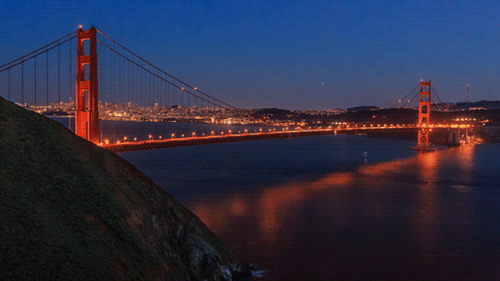
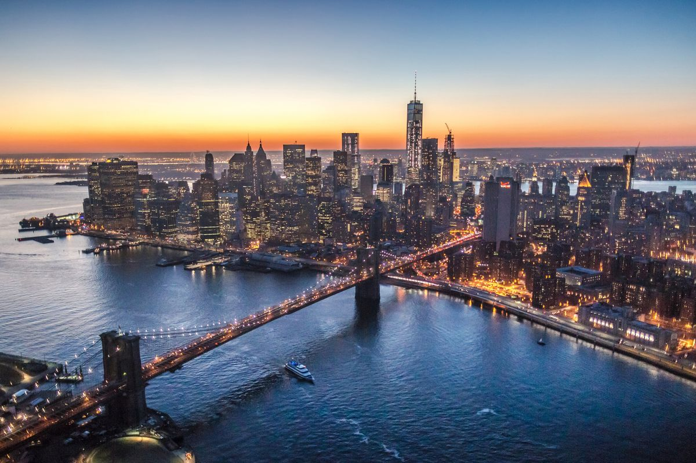
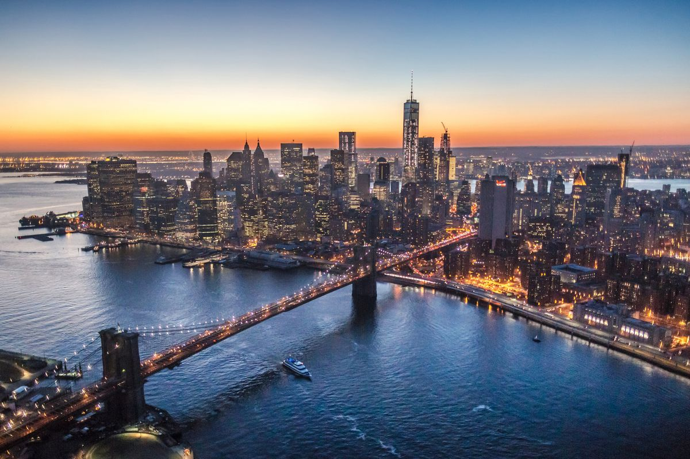

Florence


Geographical Location: Europe
Florence is located north of Rome and is the capital of Italy’s Tuscany region. One of its most iconic landmarks is the Duomo, a cathedral with a terracotta-tiled dome engineered by Brunelleschi. It is also home to the Uffizi gallery, which hosts Michelangelo’s famous “David” sculpture.
Florence is the capital city of the region of Tuscany in Central Italy. It is also the most populated city in Tuscany, with 360,930 inhabitants in 2023, and 984,991 in its metropolitan area. Florence was a centre of medieval European trade and finance and one of the wealthiest cities of that era It is considered by many academics to have been the birthplace of the Renaissance, becoming a major artistic, cultural, commercial, political, economic and financial center.
Photo Gallery


San Francisco, California

Geographical Location: North America
"San Francisco is a great location to visit with many landmarks, including the Golden Gate Bridge and Alcatraz. Located in Northern California, San Francisco is one of the most populated cities in California with a population of 815,000. The city is also a center of culture and industry. San Francisco is home to a thriving tech industry."
San Francisco has many trails and parks where you can hike or enjoy a walk. The Presidio is a large park with hiking trails and paths surrounding the Golden Gate Bridge area. One can see picturesque views of the bay and its wildlife."
Photo Gallery


New York City
 

Geographical Location: New York, United States of America
New York City, otherwise known as “The Big Apple,” is a bustling city in the United States of America. Home to about 8 million people, New York City houses popular attractions such as the statue of liberty, central park, the empire state building, and many more. You can find the original gif at Giphy
There are 5 boroughs within New York City, including Brooklyn, Manhattan, Staten Island, Queens, Bronx. Each borough is filled with different sights to see. New York City has many opportunities not only for those who live there, but also those visiting. From navigating the subway system to seeing a Broadway show, it is impossible to get bored. You can find the original image of the Brooklyn bridge at Investopedia
Photo Gallery


Santorini, Greece


Geographical location: Europe
The city of Santorini is located on an island off the coast of Greece. By ferry boat from Athens, it takes around 6 hours to arrive. Santorini is known for it's beautiful views, amazing food, an picturesque white blue architecture. The beaches in Santorini are rocky, and made up of black, red, or white lava pebbles.
Santorini is an extremly popular tourist destination for travelers all around the world. During peak season, the streets and beaches are packed. For a good sunset view, tourists will arrive 1-2 hours early just to reserve a space. Santorini contains an active volcano, which last erupted in the 16th century. The island also contains a hike between the various cities.
Photo Gallery